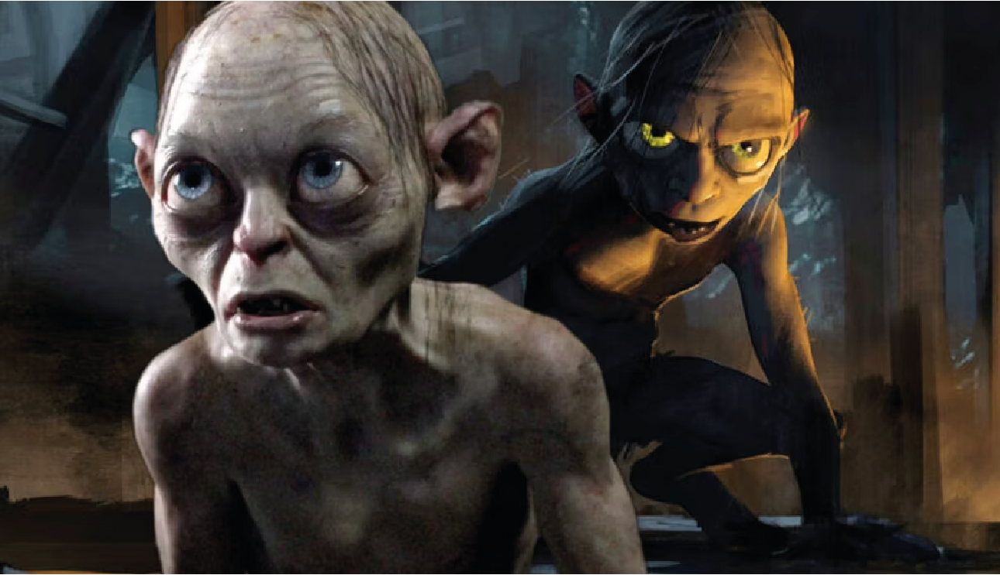
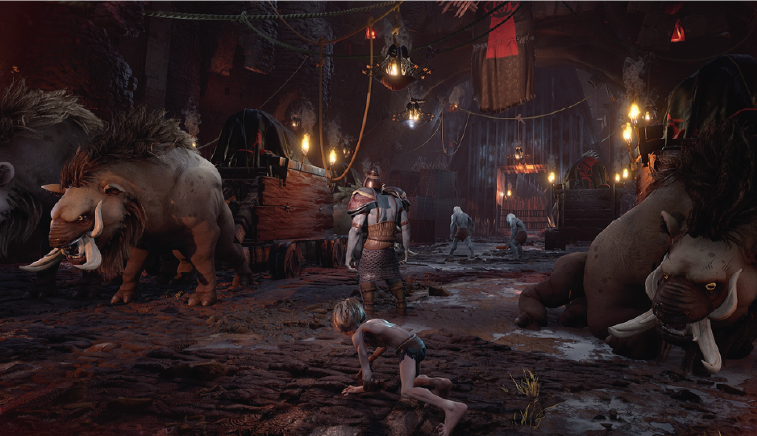
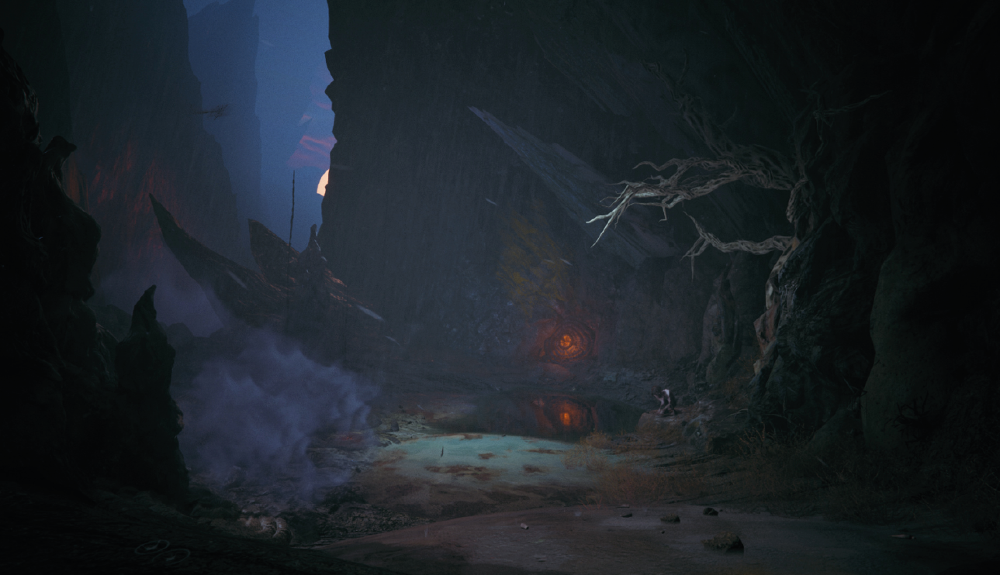
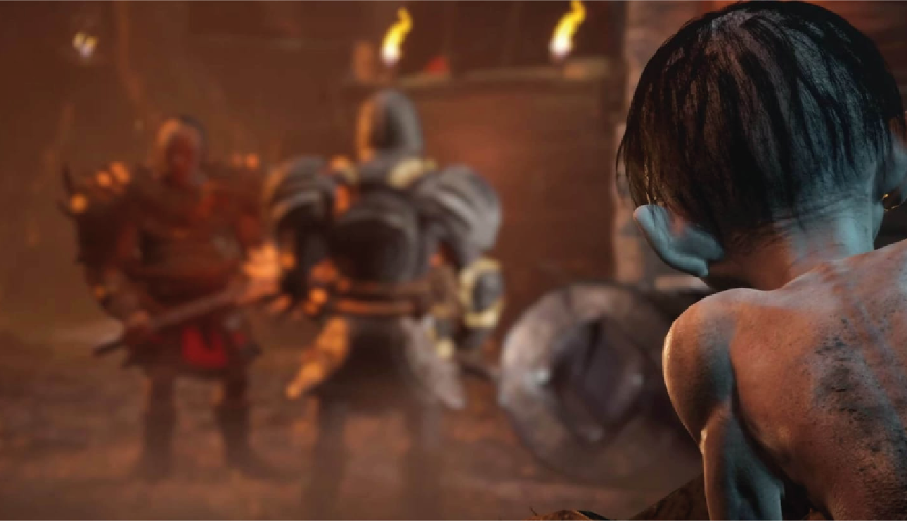

Análisis The Lord of the Rings: Gollum, un inefable viaje por la Tierra Media de Tolkien
La espera de The Lord of the Rings: Gollum ha sido tortuosa y complicada, tanto o más que el atribulado viaje de su protagonista.
Tras una infinidad de retrasos y problemas en el desarrollo, la versión de la Tierra Media por parte de Daedalic Entertainment y Nacon llega a consolas y PC con muchísimas más sombras que luces con un videojuego realmente pobre en casi todos sus apartados.
Este título, considerado el peor valorado de lo que llevamos de 2023, es un videojuego de aventuras y sigilo que no hace justicia a la enorme y alargada sombra de El Señor de los Anillos y su legado en la cultura popular, pese a que se esfuerza en contarnos una interesante historia sobre Sméagol y su inherente atracción sobre el Anillo Único, afianzándose con inteligencia en los escritos y el Legendarium de J.R.R. Tolkien.
Que no se nos malinterprete. Este maltrecho y corrompido hobbit quizás no sea el personaje más querido de la mitología de Tolkien, pero sí creemos que se merece un lugar propio dentro del Legendarium del Profesor, ya que hablamos de una figura única, que fue cambiando conforme se escribía El Señor de los Anillos y encontrando su sitio dentro de la Guerra del Anillo.
Tras sopesarlo mucho, Tolkien decidió dotarle de más protagonismo del que tuvo en Acertijos en la oscuridad, el capítulo de El Hobbit en el que aparecía por primera vez, haciéndolo vital dentro del destino de la obra en su conjunto y del eje sobre el que pivotaría la Eucatástrofe acaecida en el Monte del Destino ante los ojos de Frodo Bolsón y Sam Gamyi.
El análisis de El Señor de los Anillos: Gollum de HobbyConsolas:
- El gameplay de El Señor de los Anillos: Gollum
- La historia de El Señor de los Anillos: Gollum
- Nivel de dificultad de El Señor de los Anillos: Gollum
- ¿Cuántas horas de juego dura El Señor de los Anillos: Gollum?
- Gráficos y sonido de El Señor de los Anillos: Gollum
- Cuánto cuesta El Señor de los Anillos: Gollum y dónde puedes jugarlo
- La opinión de Re-play de El Señor de los Anillos: Gollum
- Nota: lo mejor y lo peor de El Señor de los Anillos: Gollum
Jugabilidad y gameplay de El Señor de los Anillos: Gollum"
La jugabilidad de El Señor de los Anillos: Gollum se divide básicamente en dos partes. Por un lado, zonas de plataformas, de esas de "agarrarse a salientes amarillos" tan típicas de los juegos tipo Uncharted. Son las partes más habituales del juego: constantemente nos pedirán que escalemos torres y cuevas o crucemos a través de mecanismos móviles de toda clase.
Al principio son disfrutables, pero pronto se hacen demasiado repetitivas. Como Gollum se agarra automáticamente a todos los bordes, no tienen mayor dificultad que buscar por el escenario los "bordes amarillos", enredaderas, telarañas (si sufres aracnofobia, este no es tu juego) o paredes rugosas fácilmente identificables...
... y pelearse con las no demasiado graves pero sí frecuentes torpezas del control y cámara: a veces Gollum no saltará de un borde a otro en el ángulo que deseamos, o la cámara se colocará en posiciones raras bloqueando la visibilidad.
La otra mitad del juego son las secciones de sigilo: esconderse en las sombras, avanzar lentamente o lanzar piedras a los guardias para despistarlos y que te dejen pasar. No hay tantas como secciones de saltos y escalada, y aunque deberían ser las mejores partes del juego, no funcionan como deberían. Gran parte de la culpa la tiene la terrible IA de los enemigos y el simplón diseño de niveles. Los guardias patrullan sin mucho entusiasmo por caminos prefijados, y no te será nada difícil pasar junto a ellos agazapado sin que te vean ni te escuchen, aunque estés a un metro.
Otra opción es lanzarles piedras para hacer que se muevan de su posición, pero esta estrategia, que debería usarse muy a menudo, está limitada artificialmente a situaciones muy concretas: cuando haya objetos metálicos cerca, como campanas (resaltadas al usar los "sentidos de Gollum"), podrás tirarles piedras para hacer ruido y que se muevan a inspeccionarlo.
Si, por el contrario, lanzas una piedra al suelo cerca del guardia, por lo general ni se inmutará: mirará en esa dirección pero no se moverá, por lo que la estrategia te será inútil. Las piedras es el único "objeto" que puede usar Gollum en todo el juego, y aun así el juego ni siquiera te deja usarla como quieras, lo que acentúa aún más lo encorsetado y limitado que es el sigilo en este juego. Apenas hay espacio para la estrategia o experimentación.
Si bien es posible superar la mayoría de las secciones de sigilo planificando cuidadosamente tu ruta saltando de matorral en matorral, el juego no te penalizará mucho si cometes un error o directamente vas a lo loco, haciendo que los enemigos te persigan corriendo en círculo para que te despejen el camino, sin que ello suponga alertar a los enemigos de la siguiente sala. Siempre, claro, que no "choques" con el radio de acción de los guardias (no verás a los guardias capturando a Gollum, simplemente habrá un fundido a negro si entras en el hitbox del guardia y luego una animación prefijada del guardia capturando a Gollum).
La historia de El Señor de los Anillos: Gollum
Todo lo que os hemos contado en el punto anterior ya os debería formar una imagen mental de la clase de juego que es Gollum: un juego muy anticuado en lo jugable, tirando de tópicos que ya parecían desfasados en la época de PS3, como los niveles de plataformas y escalada agarrados a bordes "magnéticos" y zonas de sigilo con guardias moviéndose en patrones claramente "escriptados". Ese diseño de juego tan obsoleto no solo se nota en la jugabilidad, también en los gráficos. Para no hacer demasiada mella, no nos vamos a andar con rodeos: los gráficos son muy malos, no parecen propios de un juego de la generación de PS5 y Xbox Series X, y francamente tampoco de la generación de PS4 y Xbox One.
Aunque el modelo de Gollum es expresivo y está bien animado, el resto de los personajes son muy deficientes. Los escenarios también están llenos de texturas "poco hechas" o que se repiten mucho y una iluminación muy plana, que no logra transmitir la sensación de estar en las angostas cuevas de Mordor. La banda sonora tampoco es para tirar cohetes, aunque sí hay que destacar al actor de voz de Gollum/Sméagol, siguiendo la estela creada por Andy Serkis. Por otro lado, el juego tiene un doblaje en élfico... pero debido a las dificultades de entrenar a los actores en este idioma, es exclusivo de la edición deluxe.
Pese a todo, consideramos los gráficos un problema menor, teniendo en cuenta que se trata de un juego de un estudio mediano (con 90 empleados, seguramente divididos en muchos proyectos) y que claramente les ha venido grande (el juego fue anunciado para 2021, luego fechado para septiembre de 2022, y finalmente sale en 2023). Dicho esto, Gollum es un juego que no entra por los ojos pero que desafortunadamente tampoco engancha a los mandos, por todas esas limitaciones en la jugabilidad descritas antes, anclado a un esquema de plataformas y sigilo muy anticuado.
Son muchos detalles los que dan la sensación de que Gollum sale como un juego inacabado, pese a los ocho meses de trabajo que han tenido tras el último retraso.
¿Es difícil el juego de Gollum?
El Señor de los Anillos: Gollum no es un juego difícil, pero puede llegar a frustrar en algunos momentos. Las zonas de plataformas no son difíciles, ya que Gollum se agarrará automáticamente a los bordes, y solamente hay un camino a seguir (que además se resaltará si pulsas el gatillo izquierdo para ver los "sentidos de Gollum"). Pero a veces los controles no responden como deberían, sobre todo cuando estás agarrado a una pared y quieres saltar a un borde cercano, mientras que la cámara algunas veces se coloca de formas que bloquean la visibilidad.
Nada grave, porque hay checkpoints continuos, pero habrá muchos momentos donde sientas que te has caído por culpa del juego... Por otro lado, las partes de sigilo no tienen mucha complejidad y se pueden solventar fácilmente incluso si vas "a lo loco" y consigues que no te pillen. Solamente algunos puzles más obtusos te pueden complicar el camino: acuérdate de peinar bien la zona (¡y no te olvides de mirar arriba!).
Tiene sentido a la hora de darle una continuidad, pero cuando los cofres más raros del juego nos recompensan con los atuendos que en Breath of the Wild se obtenían escaneando amiibo, se siente menos como continuidad y más como una forma de reaprovechar el contenido. Puede que veamos una atalaya en la lejanía y al acercarnos nos topemos con una posta. En la posta nos encargan una nueva misión secundaria (que resulta muy llamativa) y escuchamos rumores sobre un misterio que se ha divisado al sur de allí. Antes de irnos de la posta nos topamos con un pozo... y cuando salimos de explorar el pozo vemos un santuario a unos metros de distancia...
El diseño de este segundo mapa, compuesto por islas flotantes, es completamente diferente. En lugar de tener que sortear un río o decidir si escalamos una montaña o la bordeamos, debemos descubrir cómo alcanzar la siguiente isla aprovechando los poderes de Link y los artilugios zonnan a nuestra disposición, lo que hace que la exploración sea un puzle en sí mismo. Visualizadlo de esta manera: en lugar de un mundo abierto en las nubes, lo que presenta Tears of the Kingdom son niveles flotantes, con un recorrido más marcado pero que sigue ofreciendo un gran nivel de libertad y momentos de creatividad. Al recorrerlos, es inevitable pensar que para diseñarlos han tomado algo de inspiración de cierto fontanero.
Pero ahora viene lo mejor: al mostrar novedades sobre Tears of the Kingdom, Nintendo ha estado en todo momento señalando al cielo... cuando en realidad, la gran sorpresa se encuentra bajo tierra. Nos encantaría hablar en profundidad sobre esto, pero es una de esas cosas que creemos que merece la pena descubrir y experimentar por vosotros mismos. Lo único que vamos a decir es que en Tears of the Kingdom hay, en esencia, tres mapas diferentes. Y que este tercero es bastante más abierto y extenso que el cielo, que es el más sorprendente y que también tiene un diseño que rompe radicalmente con los otros dos.
¿Cuántas horas dura El Señor de los Anillos Gollum?
El Señor de los Anillos: Gollum es un juego completamente lineal. Algunos niveles son más amplios y se dejan explorar un poco, pero no encontrarás mucho por hacer en ellos, ni misiones secundarias ni nada de eso, solamente buscar una treintena coleccionables (sin ninguna utilidad). Completar los 10 capítulos te llevará aproximadamente entre 10 y 15 horas, dependiendo solo de si te atascas en alguna zona de sigilo o algún puzzle.
Precio y plataformas disponibles
El Señor de los Anillos Gollum sale a la venta el 25 de mayo de 2023 en versiones para PS5, PS4, Xbox Series X|S, Xbox One y PC.
La Standard Edition cuesta 59,99 euros en PS5, PS4 y Xbox en formato físico y digital (Microsoft Store, PS Store) y cuesta 49,99 euros en PC (Steam, Epic Games Store)
Por otro lado, hay una edición especial llamada "Precious Edition" o simplemente "Deluxe Edition" que incluye el juego, una colección de arte conceptual, un comendio de la historia, banda sonora original y doblaje en élfico.
La Deluxe Edition cuesta 69,99 euros en PS5, PS4 y Xbox (solo formato digital), mientras que La Deluxe Edition cuesta 59,99 euros en PC (Steam y Epic Games Store)
Si juegas en Nintendo Switch, tendrás que esperar: una versión para Nintendo Switch está en desarrollo, pero no saldrá hasta más adelante en 2023.
El Señor de los Anillos Gollum, un juego de otra Edad
Es una pena que El Señor de los Anillos: Gollum haya resultado ser un juego tan decepcionante. Se nota la ambición de Daedalic en crear una aventura para un solo jugador muy potente tanto en lo jugable como en la historia, al aprovechar los puntos fuertes del personaje Gollum en secciones de plataformas y sigilo, y con esa doble personalidad con Sméagol. Un juego de aventura (con nada de acción, eso sí) para un jugador que además viene sin relleno ni distracciones, algo que ya de por sí es digno de admirar.
Pero el desafío era demasiado grande para un equipo que no estaba a la altura de un juego de estas características, y que, estrictamente hablando, se puede decir que sí ha cumplido en todos sus apartados (plataformas, sigilo y narrativa), pero con unos niveles de calidad muy bajos en los tres aspectos, particularmente en la jugabilidad, impropia de un juego de 2023. Hoy por hoy es difícil de recomendar a nadie. No es un fracaso absoluto, porque tiene algunos momentos disfrutables, incluso las secciones de plataformas molan antes de volverse repetitivas. Pero el único futuro que le vemos a Gollum es que, en uno años, un grupo de aficionados de Tolkien o de nostálgicos por los juegos con licencias de películas lo conviertan en un pequeño juego de culto.
La mera existencia de un juego así ya parecía un anacronismo, un juego salido de la época de PS2, cuando no paraban de hacerse juegos basados en películas, incluso ambiciosos spin-offs que iban más allá de lo que se veía en el cine (como Enter the Matrix o el propio El Señor de los Anillos: La Tercera Edad). En realidad, no es muy diferente a otras cosas que ha lanzado este publisher francés, Nacon (en 2019 lanzaron un shooter basado en Terminator, y su siguiente "doble A" será un juego de RoboCop) o a lo que hace el también francés Microids y su ristra de juegos basados en tebeos como Astérix, Los Pitufos, Tintín, el Inspector Gadget...
Y eso es algo que, aunque sea por nostalgia de aquella época, nos encanta. Y de verdad sosteníamos que El Señor de los Anillos: Gollum podría haber sido un juego al menos notable e interesante por méritos propios... pero lamentablemente la calidad no ha acompañado.
Puntuación
Gráficos
Jugabilidad
Sonido
Duración
Un jugador
Multijugador
🟣 VALORACIÓN
El Señor de los Anillos: Gollum es un juego encomiable por el esfuerzo de Daedalic de narrar una historia totalmente original en la Tierra Media mezclando mecánicas de sigilo y plataformas, pero hace aguas por casi todos los lados: controles imprecisos, IA terrible, narrativa insípida, diseño de niveles anticuado y gráficos de otra generación.
LO MEJOR
El diseño de Gollum. Algunos puzzles "zelderos". La ambición de la historia, precuela de El Señor de los Anillos con personajes originales.
LO PEOR
Las secciones de plataformas son muy repetitivas. La IA de los enemigos es terrible. Diseño de juego muy desfasado, y gráficos de otra época.